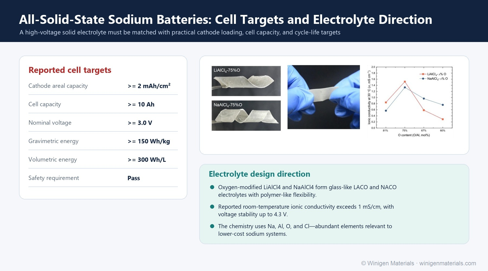

Sodium-based batteries are attractive for cost-sensitive and resource-conscious energy storage. Moving sodium chemistry into a solid-state architecture could reduce flammable-liquid content and enable sodium-metal or alloy concepts, but it introduces demanding requirements for conductivity, cathode compatibility, moisture control, mechanical contact, and scalable electrolyte films.
Why Sodium Solid-State Systems Matter
Sodium avoids dependence on lithium and can pair with iron- and manganese-rich cathodes and hard-carbon anodes. This makes sodium-ion chemistry especially relevant to stationary storage and cost-sensitive mobility. Solid-state variants add the possibility of sodium metal, sodium-free anodes, and nonflammable electrolyte layers.
Sodium ions are larger than lithium ions, so structures and interfaces from lithium systems require sodium-specific validation. The electrolyte must provide suitable migration pathways while remaining stable against both the cathode and sodium-containing anode.

Electrolyte Families
Oxide electrolytes such as beta-alumina and NASICON-type materials provide established sodium-ion conduction and good thermal stability, but ceramic processing and rigid interfaces can be difficult. Sulfides can provide softer contact and useful conductivity but require moisture control.
Halides and composite electrolytes attract attention because composition can tune ionic transport and oxidative stability, while polymer or glass-like components can improve film formation. The challenge is to combine conductivity with reduction stability, moisture tolerance, mechanical integrity, and manufacturable thickness.
Why Flexible and Composite Films Matter
A high-conductivity powder does not automatically form a useful separator. Practical films need low thickness, uniform density, low pinhole content, sufficient toughness, and stable contact with high-loading electrodes.
Composite designs can combine a ceramic conductor with polymeric or glass-like phases. These phases may improve flexibility and processing, but excessive polymer or inactive binder can lower conductivity and energy density. The optimum is therefore application-specific.
Key Screening Questions
| Screening variable | Why it matters |
|---|---|
| Ionic conductivity | Controls transport through the separator and composite electrode |
| Oxidative stability | Determines compatibility with higher-voltage sodium cathodes |
| Reduction stability | Controls contact with sodium metal, alloys, or low-voltage anodes |
| Moisture sensitivity | Affects handling, phase stability, and reproducibility |
| Film thickness and strength | Controls resistance, defect tolerance, and cell-level energy |
| Cathode areal loading | Separates laboratory proof-of-concept cells from practical designs |
Connecting to Winigen's Sodium Portfolio
Winigen supplies sodium electrolyte salts and sodium-ion formulation materials through the next-generation salts portfolio. These materials can support liquid sodium-ion baselines, interphase studies, and comparative work around sodium-compatible solvents and additives while selected solid-electrolyte supply is developed for the target architecture.
References
- Ma and Tietz, Solid-State Electrolyte Materials for Sodium Batteries: Towards Practical Applications, ChemElectroChem 7, 2693-2713 (2020).
- Hayashi et al., A sodium-ion sulfide solid electrolyte with unprecedented conductivity at room temperature, Nature Communications 10, 5266 (2019).
- Zhao et al., NASICON-structured solid-state electrolytes for sodium batteries, Energy Storage Materials 24, 75-84 (2020).
- Famprikis et al., Fundamentals of inorganic solid-state electrolytes for batteries, Nature Materials 18, 1278-1291 (2019).
Discuss Your Material Screening Program
Winigen Materials supplies sodium salts, low-moisture solvents, and electrolyte additives for next-generation sodium-ion research, and provides material-matching support for emerging solid-state concepts.
Contact Winigen MaterialsAll original diagrams on this page are © Winigen Materials unless otherwise noted. They may not be reproduced, modified, or redistributed without permission.